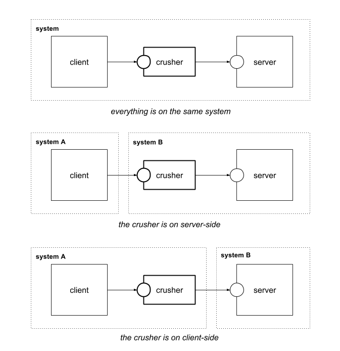

Documentation
- About
- Overview
- Reactor
- Tcp Crusher
- Datagram Crusher
- Throttling
- Performance
- Filters
- Dumping
- Samples
- Command Line
Project Documentation

NetCrusher is a managed TCP/UDP proxy that can be placed between a client and a server.
That allows to (A) control the connection and (B) get required information about the connection state and traffic statistics data. Both possibilities are very usefull for QA purpose.
NetCrusher suggest the following type of proxy engines:
Both TcpCrusher and DatagramCrusher implement the same interfaces and have the same methods in common.
Method opens network proxy. After the crusher is open incoming connection is accepted and proxied.
crusher.open();
Crusher can be opened right on creation with `buildAndOpen()` method.
TcpCrusherBuilder.builder()
// ...
.buildAndOpen();
Closes the crusher proxy and all proxied connections.
crusher.close();
As crusher implements java.io.Closeable a shorter pattern can be used.
try (TcpCrusher crusher = builder.buildAndOpen()) {
}
Retruns statistics on how many bytes passed through the crusher for the specified client.